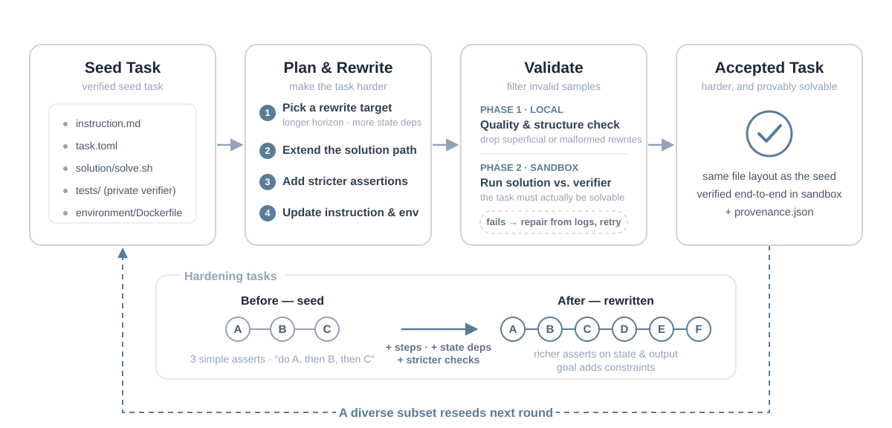
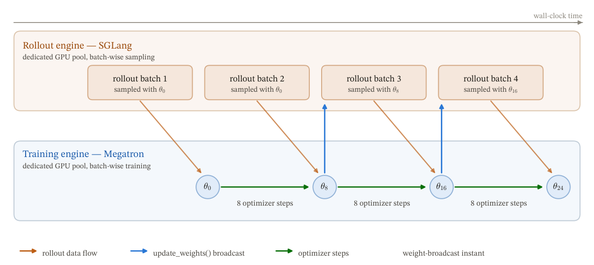
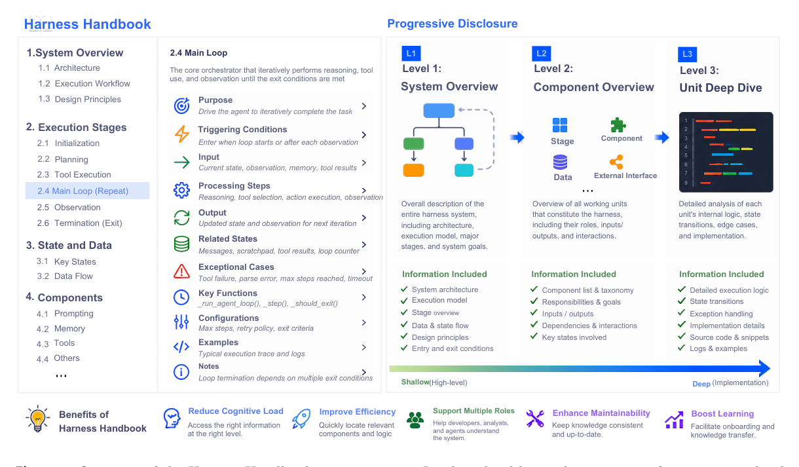
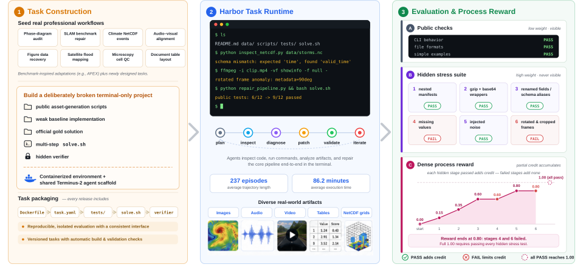

Zhongzhi Li (李忠智)
I am a Ph.D. student in the School of Computing at the University of Georgia, advised by Dr. Ninghao Liu. I received my M.S. from the School of Intelligent Robotics and Advanced Manufacturing Innovation at Fudan University. My research focuses on building reliable long-horizon AI agents through scalable task synthesis, trajectory learning, and verifiable post-training, with broader interests in foundation-model interpretability, controllability, and safety.

News
- [2026-08] Released Recursive Synthesis for Long-Horizon Terminal Tasks, together with 37,484 verified terminal tasks and 327,189 agent trajectories.
- [2026-07] Released Stale but Stable, introducing staleness-adaptive trust regions for stabilizing asynchronous reinforcement learning.
- [2026-07] Released Harness Handbook, a behavior-centric framework for locating and editing distributed behavior in evolving agent harnesses.
- [2026-07] Released Long-Horizon-Terminal-Bench, a benchmark of 46 tasks across nine categories for evaluating sustained terminal-agent work.
- [2026-05] 🔥 Less is Enough was accepted to ICML 2026 as an Oral presentation (top 0.7%).
- [2026-05] Joined Tencent as an Agent Algorithm Intern, focusing on agent training optimization, data synthesis, trajectory analysis, and evaluation for long-horizon task-solving agents.
- [2026-02] Less is Enough: Synthesizing Diverse Data in Feature Space of LLMs was released on arXiv and ranked #1 Paper of the Week on Hugging Face (Feb 16–22).
- [2025-08] Joined the School of Computing at the University of Georgia as a Research Assistant.
Selected Publications
|
 |
Recursive Synthesis for Long-Horizon Terminal Tasks Zhongzhi Li*, Yucheng Shi*, Zongxia Li*, et al. arXiv preprint, 2026. project page / arXiv / Hugging Face / data & models We introduce Recursive Synthetic Terminal Tasks (RST), a solution-first framework that recursively constructs and validates long-horizon terminal tasks. Across 15 rounds, RST produces 37,484 verified tasks and 327,189 agent trajectories that support both supervised and reinforcement learning. |
|
 |
Junyao Yang, Yucheng Shi, Zongxia Li, Zhongzhi Li, et al. arXiv preprint, 2026. project page / arXiv / Hugging Face / code We introduce Staleness-Adaptive Trust Region (SAT), a directional clipping mechanism that tightens PPO-style updates on the high-staleness tail while preserving ordinary and pull-back updates, improving stability in asynchronous LLM reinforcement learning. |
|
 |
Harness Handbook: Making Evolving Agent Harnesses Readable, Navigable, and Editable Ruhan Wang, Yucheng Shi, Zongxia Li, Zhongzhi Li, et al. arXiv preprint, 2026. project page / arXiv / Hugging Face / code We introduce a behavior-centric representation that maps agent-harness behaviors to source code, together with Behavior-Guided Progressive Disclosure for improving behavior localization and edit planning while using fewer planner tokens. |
|
 |
Zongxia Li*, Zhongzhi Li*, Yucheng Shi*, et al. arXiv preprint, 2026. project page / arXiv / code / dataset / leaderboard We introduce a benchmark of 46 long-horizon terminal tasks across nine categories, with dense partial-credit grading for measuring progress through workflows that require hundreds of interactions. |

|
Less is Enough: Synthesizing Diverse Data in Feature Space of LLMs Zhongzhi Li*, Xuansheng Wu*, Yijiang Li, Lijie Hu, Ninghao Liu. ICML 2026 Oral. project page / arXiv / code We introduce Feature Activation Coverage (FAC) and a diversity-driven data synthesis framework that improves data diversity and downstream performance on instruction following, toxicity detection, reward modeling, and behavior steering. |

|
Zhongzhi Li, Jingqi Tu, Jiachen Zhu, et al. Neurocomputing, 2025. |
* Equal contribution.
Honors & Experience
Graduate studies. Selected honors.
- Outstanding Graduate of Shanghai May 2025
- Qingyun Scholarship (Awarded annually to only 10 graduate students) Oct 2024
- National Scholarship (Only 1 scholarship recipient is selected from 45 students) Jun 2023
Undergraduate studies. Selected honors.
- Outstanding Graduate of Liaoning Province May 2022
- Annual Personality Scholarship (Awarded annually to only 10 undergraduate students) Dec 2021
- National Scholarship (Only 1 recipient is selected from 155 students) Dec 2020
Experience
- Agent Algorithm Intern at Tencent May 2026 – Present
- Robotics Algorithm Intern at X Square Robot May 2025 – Jul 2025
- Algorithm Engineer Intern at Guoxuan High-Tech Co., Ltd Sep 2022 – Sep 2023
- Quantitative Research Intern at Dongguan Securities Co., Ltd (Shanghai) May 2022 – Aug 2022
Service
Reviewer for IEEE Transactions on Artificial Intelligence, IEEE Transactions on Industrial Informatics, IEEE Internet of Things Journal, and AAAI.
Media Coverage
- Hugging Face: "Harness Handbook — #1 Paper of the Week"
- Elon Musk on X: reshared Long-Horizon-Terminal-Bench twice (July 14 post; July 15 post).
- Hugging Face: "Top AI Papers of The Week (Feb 16-22)"
- Towards AI: "Top Papers of The Week"
- PaperWeekly: "还在盲目堆数据？用SAE特征空间指导合成，2K样本轻松追平300K SOTA"